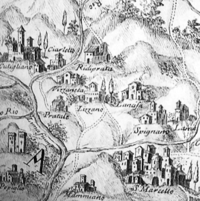

La villa della Lama
Da questo punto si può osservare il luogo dove un tempo sorgeva Villa La Lama, una residenza appartenuta nel XVII secolo all’avvocato fiorentino, Giuliano Pacioni. Il Pacioni aveva ottenuto per la sua villa privilegi fuori dall’ordinario che potevano addirsi più a un borgo che a una residenza privata: a La Lama, infatti, si poteva tenere il mercato, si celebrava la messa in tutte le feste e solennità dell’anno ed era concesso allevare trote nelle peschiere, benché questo pesce fosse riservato alla tavola reale.
La Villa era situata al centro di un anfiteatro naturale, racchiusa entro mura, munite di quattro torrioni. C’era una chiesa, a pianta ottagonale, dedicata a Maria Vergine della Pace e numerose fonti, alberi da frutto, cipressi, abeti. La fonte vicina alla chiesa conservava un’iscrizione latina, a ricordo della costruzione, nell’anno 1676, della fonte stessa e di una strada, la via Giulia. La strada, che si biforcava in due tratti, uno verso levante e uno verso ponente, era stata costruita da Pacioni per permettere agli abitanti della zona di raggiungere più comodamente Bologna e Modena.
Nella foto un dettaglio della carta riprodotta in A. Matani, Delle produzioni naturali del territorio pistoiese. Relazione istorica e filosofica, Tipografia Bracali Pistoia, 1762, disegno di Francesco Bracali.